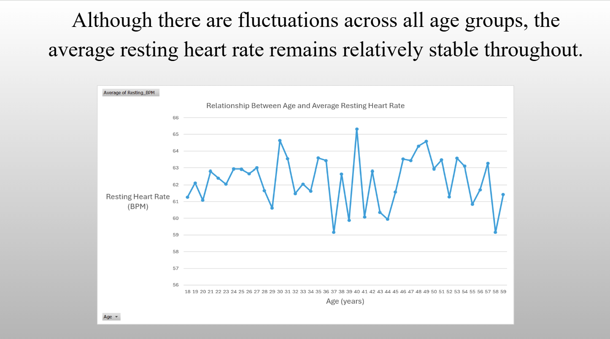
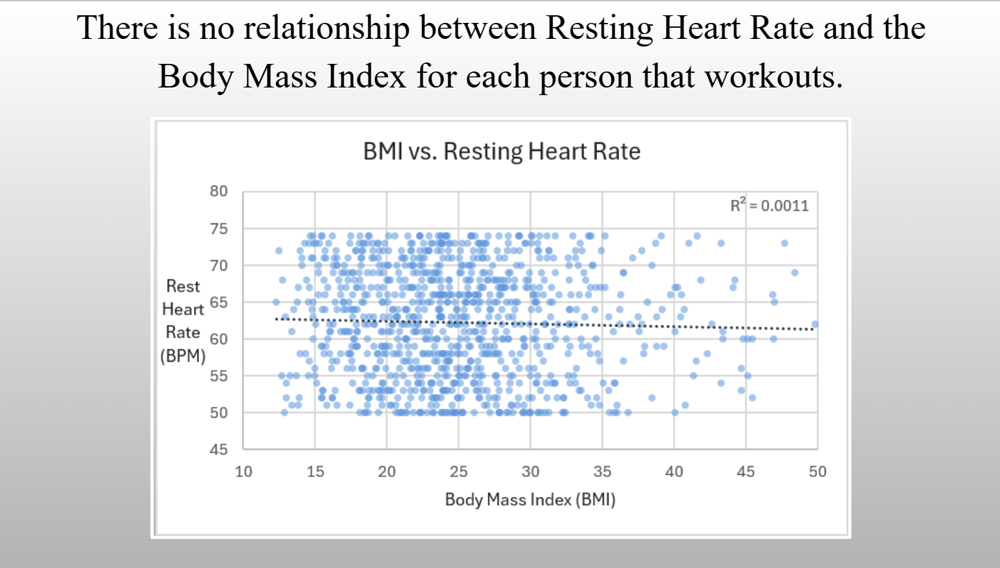
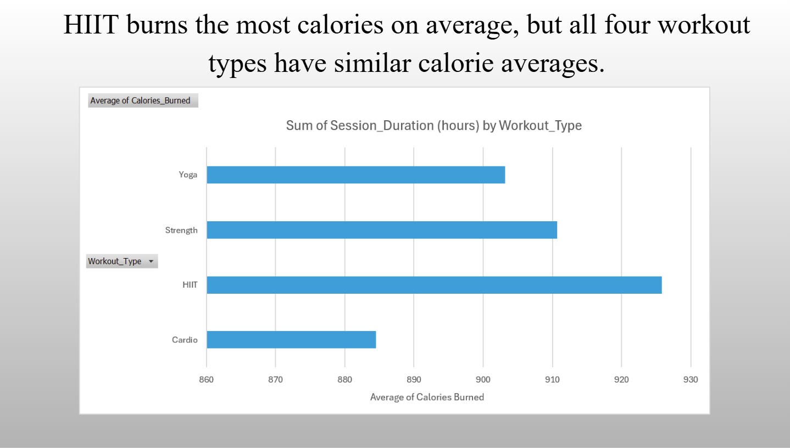
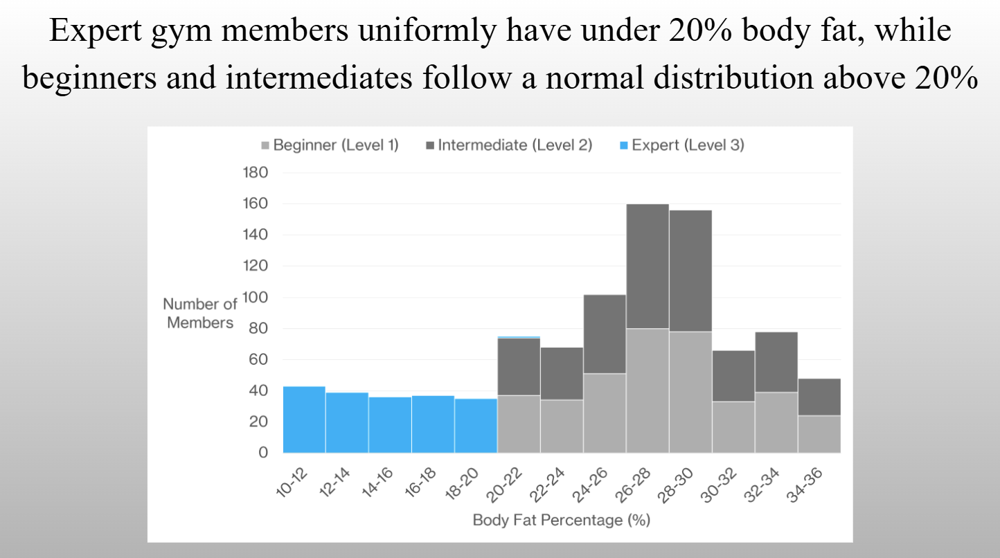

For this project we chose a data set that includes information of gym members of various backgrounds and goals when exercising. We are all interested in exercise and this data set provided us with the information to explore various topics and questions related to working out and exercising.
1.How does resting heart rate vary across different age groups?

2.Is there a pattern between body mass index (BMI) and resting heart rate?

3.Does workout type have a strong correlation with calories burned?

4.How does experience level differ the distribution of body fat percentage?

E-Portfolios https://coopermartindale.github.io/ https://gstuder621.github.io/ https://dlain-uark.github.io/ https://landonmo0re.github.io/ https://bcrebbe.github.io/